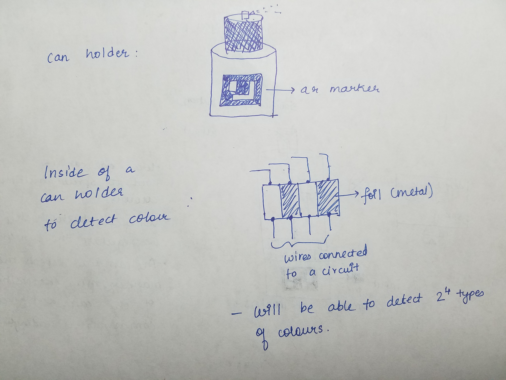
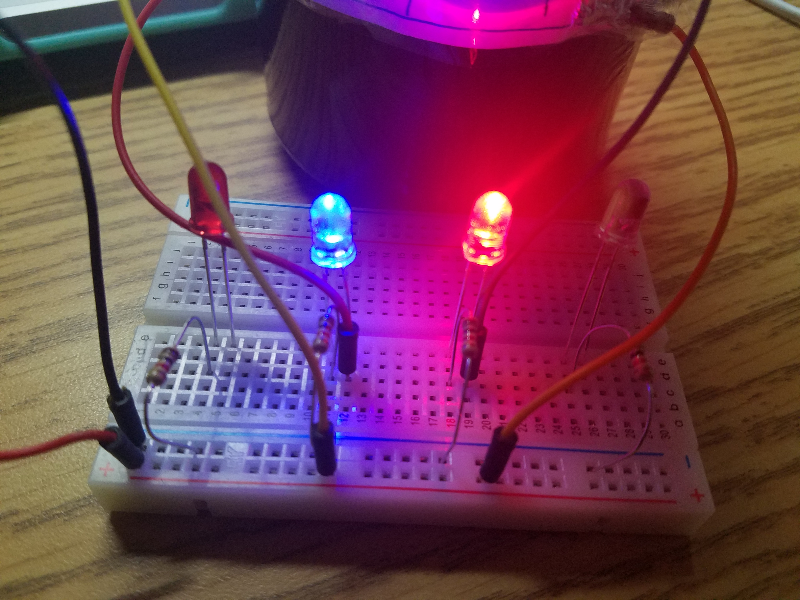
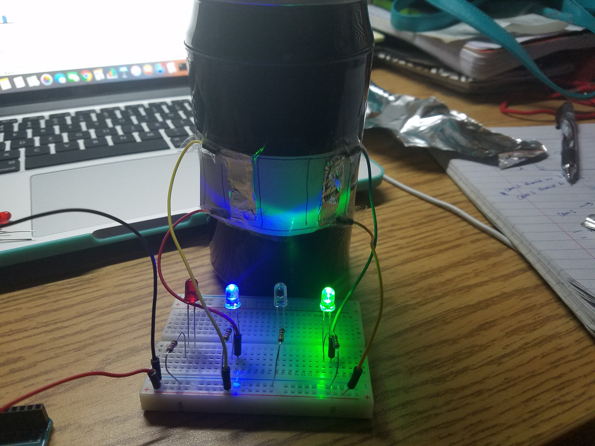
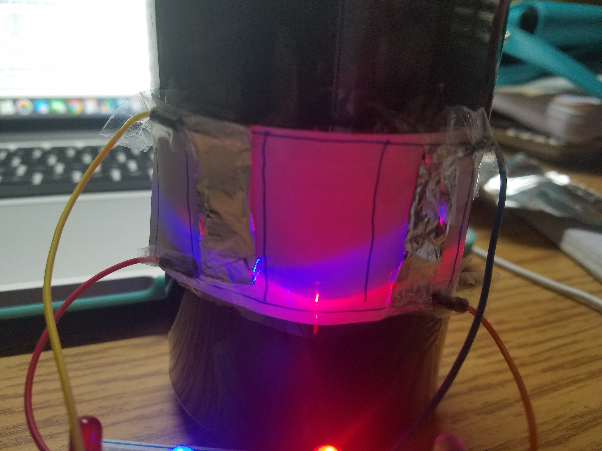

Namita Mhatre
So there were two methods suggested to go about reading the barcode to know which colour is in the spray can.
1. To detect a barcode of black and white colour(reflective and absorbing surfaces). For this, an IR sensor could be used
to detect the four bars and their colours. Then a combintaion of these would result in one colour.
Disadvantage: Too much space is occupied as we have to fit in a Infrared LED inside the can holder as well as we have
to have four IR sensors and this becomes a bulky set-up.
2. We could have conductive material instead of using colours to reflect or absorb. For example, We have four stripes on the bar.
According to the respective spray can we can have as much as 16 combinations. (2^4).
The method is portrayed below:

Now, we can have a holder with this set-up and different spray cans will have a different bar-code combination.
This is the trial-set up used:
This image shows that the second and fourth bars are connected: (just visualizing the circuit. Normally, the output would go
to the computer. No need of LEDs)

This image shows that the second and third bars are connected:

This is the code on the spray-can.

As this sensor would just have 16 readings for 16 colours, we do not have continuous data for visualization.